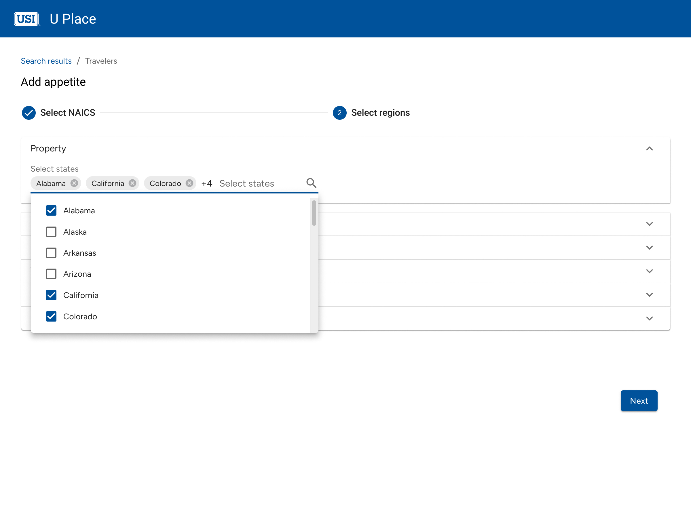
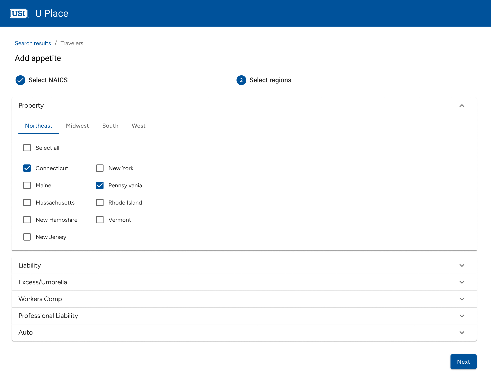
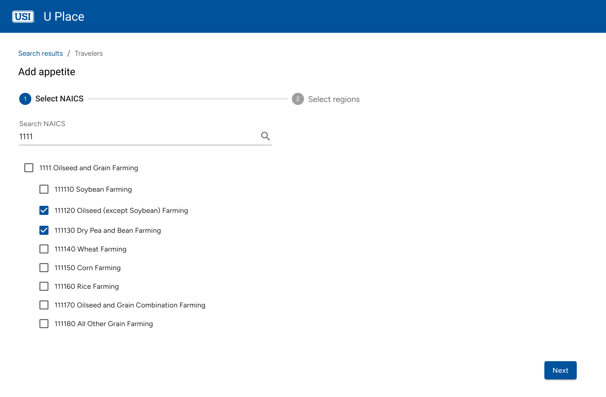

Overview
UPlace's Carrier Recommendations Matrix helps brokers identify which insurance carriers are best suited to cover a prospect’s insurance needs across multiple lines. Carriers are ranked based on appetite, and the existing UI displays whether they fall within the Top 5 or Next 5 for each coverage type.
However, this overview operated only at the line-of-coverage level. With most lines having several specific policy types, the existing tool failed to surface the nuances brokers needed to make informed decisions – especially during renewals.
Problem
How might we empower brokers to make smarter renewal decisions by giving them the ability to compare carriers across individual policies, not just coverage types?
The original summary matrix only supported one column per line of coverage, meaning users could see carrier rankings (Top 5/Next 5) for broad categories like Property or Auto, but not for the specific policies that fall under those categories.
Users needed to:
- Compare carriers side-by-side at a policy level
- Understand which carriers rank Top 5 for the specific policies they care about
- Quickly assess which carriers can write the most policies across the account
Solution
To address this, redesigned the matrix view to support policy-level comparisons while preserving usability and scannability.
Understanding User Needs: Research & Insights
User Research
To better understand both user behavior and business expectations, I conducted interviews with key internal stakeholders — including brokers, underwriters, and business analysts who regularly use the tool
I focused on:
- Decision-making behavior: How do users currently choose which carriers to prioritize?
- Comparison workflows: Do users typically compare policies side-by-side? Across coverages?
- Usability blockers: What slows them down the most today?
Key Insights
- Users rely heavily on carrier breadth to streamline renewals.
- There was growing demand for visibility at the individual policy level, which had not existed in the tool before.
- Being able to compare policies across coverages in a single view was a major priority.
Iteration & Refinement
Accordion Matrix by Coverage
Based on stakeholder feedback, I refined the state selection process across multiple iterations to improve efficiency, control, and discoverability.
Iteration 1: Multi-Select Dropdown
💡 Design Rationale: Users could search and select states manually via a dropdown.
🚫 What Happened? While useful for finding specific states, bulk selection was tedious—users had to select states one by one, creating unnecessary friction.
Iteration 2: Region-Based Selection
💡 Design Rationale: To improve scanability, I grouped states into regions, aiming to help users find relevant states faster without excessive scrolling.
🚫 What Happened? Readability improved, but new friction emerged—switching tabs disrupted selection across multiple regions, adding extra clicks, while limited visibility made comparisons more difficult.
Iteration 3: Bulk Selection with Granular Control

💡 Final Solution: Instead of region-based selection, I displayed all states upfront with a bulk select option while preserving manual fine-tuning.
Why It Works
- Most users started by selecting all states and then fine-tuned by deselecting a few.
- Bulk selection reduced cognitive effort compared to the dropdown approach.
- Eliminating tabs and dropdowns accelerated selection speed, aligning with how users naturally worked.
NAICS Code Selection
The NAICS selection process followed a similar iteration path, evolving to support bulk selection while reducing cognitive overload.
Iteration 1: Search-Based Filtering
💡 Design Rationale: A search-based multi-select dropdown allowed users to filter NAICS codes manually.
🚫 What Happened? Users struggled with bulk selection, needing to know exact search terms, which slowed them down.
Iteration 2: Flat List with Bulk Selection

💡 Design Rationale: To improve visibility, I displayed all NAICS codes upfront in a flat list, reducing reliance on search.
🚫 What Happened? Speed improved, but without hierarchy, scanning became difficult—users struggled to differentiate between sections.
Iteration 3: Progressive Accordion with Visual Hierarchy

💡 Final Solution: Introduced collapsible categories for a structured, scalable selection experience.
Why It Works
- Users preferred scanning over searching, reinforcing the need for a structured layout.
- Collapsible sections reduced cognitive load, preventing information overload.
- Bulk selection was faster yet still flexible, allowing quick high-level selections with precision adjustments when needed.
Final Solution
Hi Fidelity Designs
The final high-fidelity designs reflect a balance between usability, flexibility, and speed, allowing users to seamlessly configure appetite preferences with minimal friction.

Developer Handoff
Translating Design into Actionable Developer Guidance
To ensure smooth collaboration between design and engineering, I created a detailed developer handoff document for Coaches Pick.
The flow was organized into logical sections, each representing a major interaction group: carrier selection, appetite setup, NAICS targeting, state targeting, and confirmations and dialogs.
Each screen is annotated with key functionality notes to clarify expected behaviors, decision points, and system validations, helping the development team accurately implement the end-to-end experience.
Impact & Outcome
Driving Efficiency & Strategic Control
📉 40% Fewer Support Requests
Before Coach’s Pick, underwriting teams had to request backend changes to carrier preferences, leading to delays and extra workload for support teams. Support ticket data from the first three months post-launch showed a 40% decrease in ranking adjustment requests.
🚀 85% Adoption in 6 Weeks
Usability testing and stakeholder feedback revealed that underwriters quickly adapted to the new workflow. Within six weeks, 85% of underwriters had successfully configured at least one carrier preference, based on internal usage analytics.
Learnings
Looking Back to Move Forward
Coach’s Pick reinforced the importance of designing for flexibility while maintaining clarity. By anchoring decisions in real user behavior — like bulk-first selection and localized overrides — I was able to deliver a solution that felt native to underwriters’ workflows.
The success metrics were strong, but I believe there’s more potential ahead. If I were to evolve the tool further, I would:
- Conduct follow-up research to evaluate override effectiveness and user satisfaction post-implementation
- Integrate reporting dashboards to visualize override impact across teams and geographies